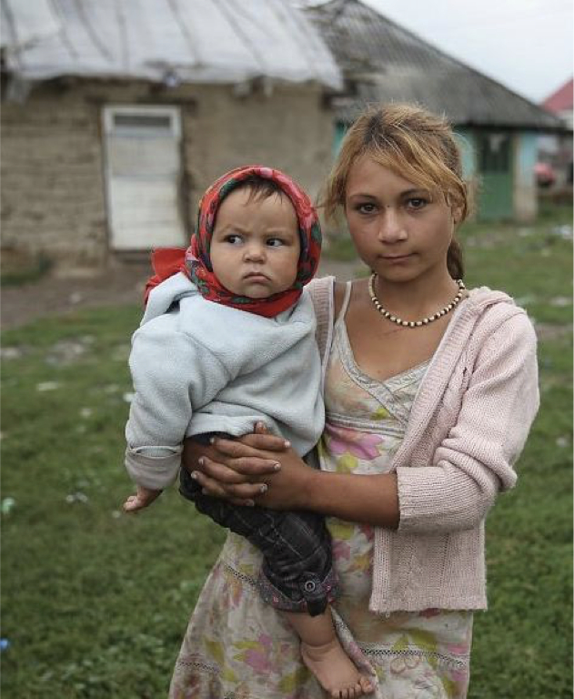

-2-MasterItem.svg)
Leathers pointed out, twenty-five to thirty people is still ten times the
biblical requirement! And
anyway, maybe they should wait until the new minister came. Maybe he would have
some brilliant
ideas about building up a thriving evening congregation,
I soon assured them that I had no magic tricks up my sleeve, and suggested that
we should look at
an alternative to the service in the sanctuary. We began with a Sunday evening
discussion group in
the lecture hall. We had a speaker, followed by small groups, followed by tea
and cookies.
That went well for a year or so. Then, we tried monthly meetings. But, before
too long, we gave up on
any regular Sunday evening gatherings, leaving ourselves open for “special events” as the need arose.
Strangely enough, there were very few special events, not even at anniversary
time. The Sunday
evening services actually passed away peacefully! We didn’t even conduct a memorial service for
them.
Westminster has always been a congregation that has reached out to the
community. Stories abound of the hundreds of servicemen during World
War I who used the spacious gym and church hall for recreational
purposes. Indeed, at one point in those early years, they had a pool table
in one of the basement rooms, much to the disgust of the Wednesday
evening prayer meeting group who prayed fervently that “this wicked
thing would soon be removed from our premises.” That prayer must have
been answered, because when the pool table was worn out, it was never
replaced.
Shortly after we arrived in 1963, there were discussions about some kind
of church-sponsored child care on a permanent basis. As early as 1948 or
1949, there had been a weekday play school that our two-year-old Francie
(as the minister’s child) was allowed to attend, though the lower age limit was three. But, by
1965,
with the active assistance of Mrs. Gretta Brown (daughter of the late Charles W.
Gordon—“Ralph
Connor”), we looked at the possibility of a lunch and after- school program for the
kindergarten to
Rev. Robert Thompson and Lorraine Thompson
